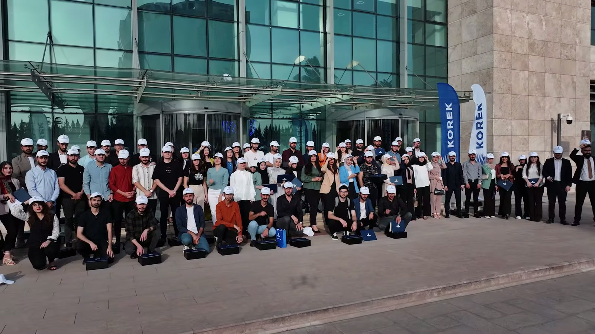
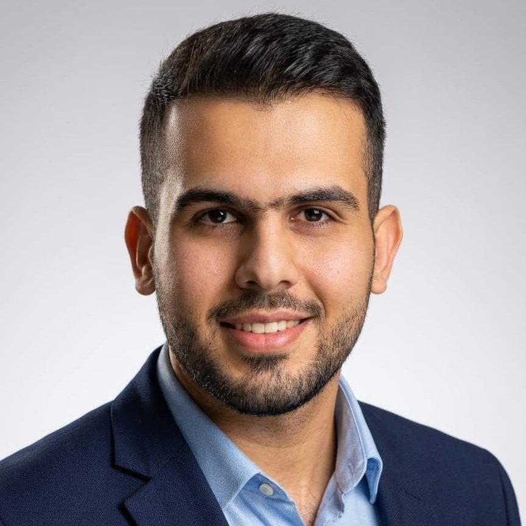

Specify.
The as-is, the to-be, the acceptance criteria. Translating how people work into a product a team can build and test.
I’m Alan. I connect design, production and product ownership to take work from the first brief to the real world.
Explore my work ↘Selected workApps, campaigns, live productions and operational systems. Explore the work—and what it took to get it out into the world.
 01 / 08
01 / 08Four years of prize-draw marketing, and the live draws shot, cut and broadcast myself.

02 / 08Everything the 200 students a year saw and held: material, gifts, the films.
 03 / 08
03 / 0858 screens. The app launched with the design. 3.0 stars before, 4.5 today.
 04 / 08
04 / 08Concept, build supervision and running it on site. Three years, one Prime Minister.
 05 / 08
05 / 08Brand guardian on a film series that hit number one on YouTube trending in Iraq.
 06 / 08
06 / 08The box, the campaign, the film. 5,500 families, with the Barzani Charity Foundation.
 07 / 08
07 / 08Four years of concept and design, no agency, 29 pieces of 117.
 08 / 08
08 / 08Owning the platform that took Kurdistan's government mail live on 3 September 2026. 422 envelopes on day one.
The as-is, the to-be, the acceptance criteria. Translating how people work into a product a team can build and test.
Brand, campaign, print, motion, an app with 58 screens, a stand, a box. One idea carried through every touchpoint.
On set, on site and through acceptance testing. Staying with the work until the details hold up in the real world.

My work connects the studio and the operation: from graphic design and production at Korek Telecom to product ownership at Eagle Post.
More about me ↗